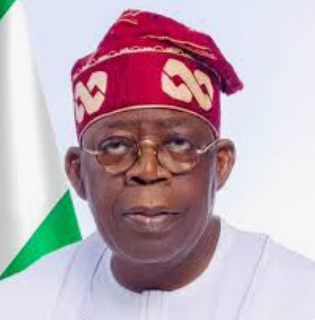

Select a candidate and click the green button to cast your vote.
Peter Obi is a former governor of Anambra State who served from 2006 to 2014. He is a businessman with experience in banking and logistics, and he has been a presidential candidate advocating for fiscal responsibility.
Obi has led education and economic reform initiatives, promoted prudent spending, and supported youth entrepreneurship and transparency in government.
There is no publicly known criminal record for Peter Obi.
His manifesto proposes stronger education funding, accessible healthcare, anti-corruption enforcement, support for small businesses, and growth of the digital economy to create jobs for young Nigerians.
Atiku Abubakar is a former Vice President of Nigeria, serving from 1999 to 2007. He is also a businessman and has run for president several times.
Atiku has worked in the private sector and politics, focusing on education, trade, and economic development through regional and national initiatives.
There is no publicly confirmed criminal record for Atiku Abubakar.
His manifesto emphasizes economic diversification, agricultural development, improved power supply, job creation, and stronger support for youth and women entrepreneurs.

Bola Ahmed Tinubu is a former governor of Lagos State, serving from 1999 to 2007, and a key political leader in his party. He has also served as a senator and has strong influence in national politics.
Tinubu has worked on urban development, transportation, and public finance, and he has promoted private sector growth and infrastructure investment.
There is no publicly known criminal conviction for Bola Ahmed Tinubu.
His manifesto focuses on infrastructure investment, safer cities, modern transportation, improved public services, and digital governance to make government more efficient.